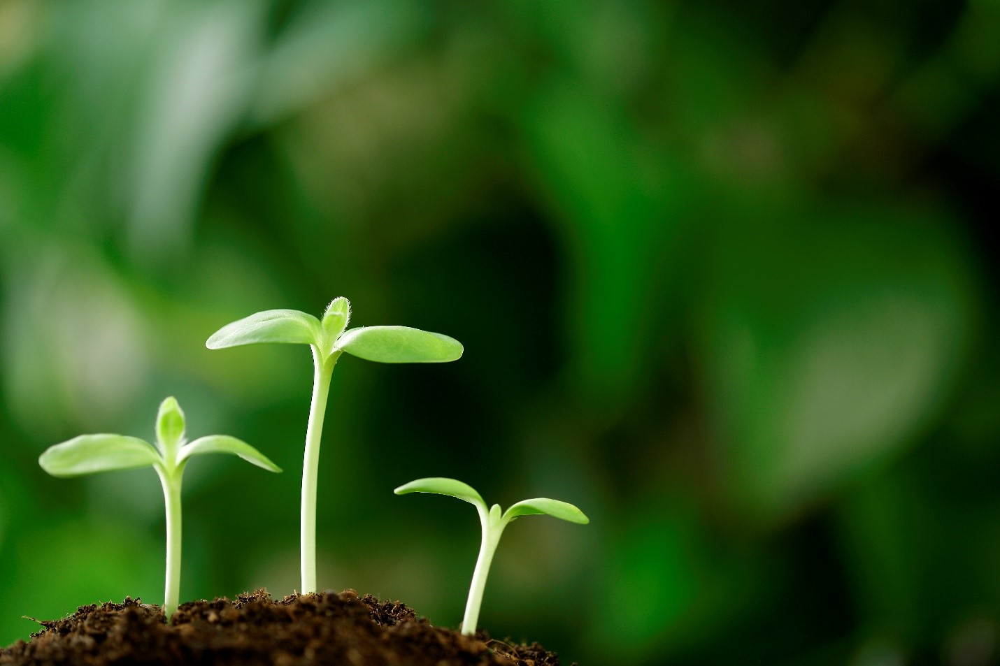
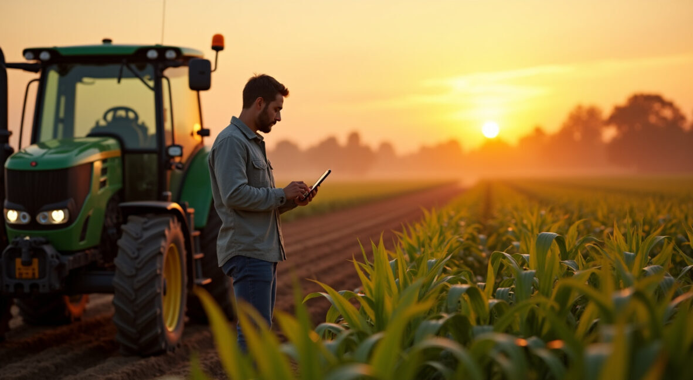
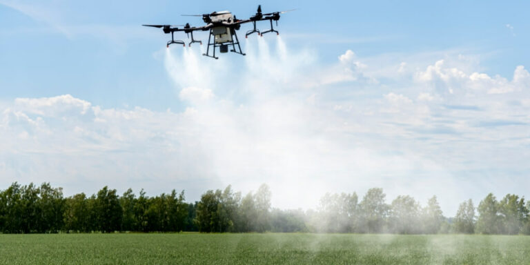
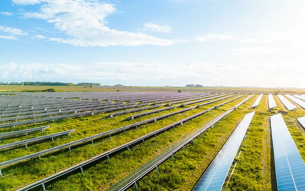
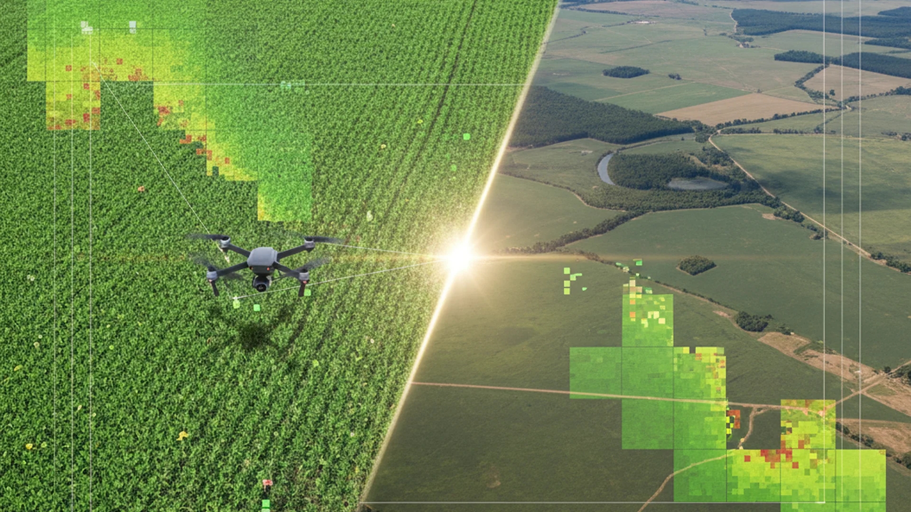

O equilíbrio perfeito entre a potência da produção e a preservação do meio ambiente.
A produção em larga escala e o respeito ambiental são os pilares da segurança alimentar global.
Garantir que a alta produtividade não comprometa a saúde do solo e dos recursos hídricos.
Manter a biodiversidade e os ciclos naturais como ativos fundamentais do agronegócio.
Práticas sustentáveis que reduzem custos e abrem portas para mercados internacionais exigentes.
O crescimento populacional exige mais alimentos, mas os recursos são finitos. Os principais problemas enfrentados hoje incluem:

Soluções práticas que já estão transformando o agronegócio brasileiro.

Integração Lavoura-Pecuária-Floresta: Diversifica a produção e recupera áreas degradadas.

Uso de dados e tecnologia para aplicar insumos apenas onde e quando necessário.

Uso de defensivos e fertilizantes biológicos que reduzem o impacto químico no ambiente.
A tecnologia não é apenas sobre máquinas, é sobre inteligência. Drones, sensores e IA permitem uma gestão cirúrgica da fazenda.
Com o monitoramento em tempo real, o produtor economiza água, reduz defensivos e aumenta a produtividade por hectare, poupando a abertura de novas áreas.

Junte-se aos milhares de produtores que já equilibram lucro e preservação.